Contents
- Skrypt do schematu labolatoriów z KUS
- dane programu
- Wzory
- Badanie odpowiedzi układu na skok jednostkowy
- Obliczanie ograniczeń
- ODPOWIEDŹ NA SKOK JEDNOSTKOWY
- Obliczanie nastaw ciągłego regulatora prędkości
- Obliczanie nastaw ciągłego regulatora prądu
- Rozpoczęcie symulacji układów z regulatorem ciągłym dla róznych rodzajów obciążenia
- ROZRUCH UKŁADU BEZ MOMENTU OBCIAŻENIA *REGULACJA CIĄGŁA***
- ROZRUCH ZE ZNAMIONOWYM MOMENTEM CZYNNYM *REGULACJA CIĄGŁA***
- PRACA UKŁADU Z UDAROWYM MOMENTEM OBCIĄŻENIA *REGULACJA CIĄGŁA***
- PRACA UKŁADU Z BIERNYM MOMENTEM OBCIĄŻENIA *REGULACJA CIĄGŁA***
- PRACA UKŁADU Z PULSACYJNYM MOMENTEM OBCIĄŻENIA *REGULACJA CIĄGŁA***
- Punkt 3 oblcizanie transmitancji zastępczej układu ciągłego
- Charakterystyki bodego otwartego układu
- Charakterystyka nyquista otwartego układu
- liczymy transmitancję zamkniętego układu w celu wyznaczenia wg
- Charakterystyka Bodego układu zamkniętego
- Charakterystyka nyquista układu zamkniętego oraz obliczanie zapasu fazy i wzmocnienia
- Liczymy nastawy dyskretnego regulatora obrotów
- Liczymy nastawy dyskretnego regulatora prądu
- Wykonujemy symulację dla źle dobranego(zbyt małego) czasu próbkowania Tp i obserwujemy zniekształcenie przebiegów
- Liczymy błąd kwantyzacji dla dobrze dobranego Tp
- Wykonujemy symulację dla zbyt dużego kwantyzatora i obserwujemy rezultaty
- Następnie wykonujemy symulację dla małego kwantyzatora i obserwujemy brak zakłóceń
- Rozpoczęcie symulacji układów z regulatorem dyskretnym dla różnych rodzajów obciażenia
- ROZRUCH UKŁADU BEZ MOMENTU OBCIĄŻENIA *REGULACHA DYSKRETNA***
- DZIAŁANIE UKŁADU Z UDAROWYM MOMENTEM OBCIĄŻENIA *REGULACHA DYSKRETNA***
- ROZRUCH UKŁADU BEZ MOMENTU OBCIĄŻENIA *REGULACHA DYSKRETNA***
- DZIAŁANIE UKŁADU Z PULSACYJNYM MOMENTEM OBCIĄŻENIA *REGULACHA DYSKRETNA***
- ROZRUCH UKŁADU ZE ZNAMIONOWYM MOMENTEM OBCIĄŻENIA *REGULACHA DYSKRETNA***
Skrypt do schematu labolatoriów z KUS
Autor: Adam Miarka, Damian Kadłuczka data 10.03.2016 grupa 29
clear all; close all; clc;
dane programu
Js = 8.25;
Rt = 0.039;
Lt = 0.00046;
n = 1200;
In = 124;
Un = 440;
Pn = 50000;
Lambda = 2;
p = 50;
tau0 = 3.3e-4;
Tend = 20;
%Fp =
Wzory
%Jmr Jmr = 5*Js; %J J = Js+Jmr; %prędkość kątowa wn = 2*pi*n/60; %psi psi = ((Un-Rt*In)*30)/(pi*n); %B B= J*Rt/(psi^2); %T T = Lt/Rt; %Mn moment obciążenia Mn = psi * In; %T1 T1 = (B/2)*(1-sqrt(1-4*T/B)); %B1 B1 = B - T1; %Beta Beta = Lambda/p; %Y Y = 9/(2.5*In); %kz kz = (B1-Beta)/(Y*B1); %Kt Kt = 10/(1.2*wn); %deltawn deltawn = wn*0.04; %Kp Kp = 0.15*Un; %Uz0 Uz0 = Lambda*In*(Y*B1)/(B1-Beta); TR = 4*Beta;
Badanie odpowiedzi układu na skok jednostkowy
sim Simulinkasdasd.slx
Obliczanie ograniczeń
% ograniczenie pradu time = ones(1, length(Przebiegi.time)); Id = Lambda * In * time; %ograniczenie pochodnej pradu derI = p * In* time; %ograniczenie predkosci obrotowej wLimit = n*time;
ODPOWIEDŹ NA SKOK JEDNOSTKOWY
f = figure; set(f,'name','Odpowiedzi obiektu na skok jendostkowy','numbertitle','off'); %Predkosc obrotowa subplot(2,2,1); plot(Przebiegi.time, Przebiegi.signals.values(:,1)); title('Prędkość kątowa'); xlabel('time [s]'); ylabel('w[rad/s]'); hold on; %ograniczenie predkosci obrotowej % subplot(3,2,1); plot(Przebiegi.time,wLimit, '-r'); % hleg = legend('Predkość obrotowa','Ograniczenie','Location','NorthEast'); % set(hleg,'FontAngle','italic','TextColor',[.3,.2,.1]); hold off; subplot(2,2,2); plot(Przebiegi.time, Przebiegi.signals.values(:,2)); title('GwM'); xlabel('time [s]'); ylabel('Object response'); % subplot(3,2,3); plot(Przebiegi.time, Przebiegi.signals.values(:,3)); % title('GIU'); xlabel('time [s]'); ylabel('Object response'); % % %Pochodna prądu % subplot(3,2,4); plot(Przebiegi.time, Przebiegi.signals.values(:,4)); % title('dGIU/dt'); xlabel('time [s]'); ylabel('Object response'); hold on; % % %Ograniczenie pochodnej prądu % subplot(3,2,4); plot(Przebiegi.time, derI, '-r'); % hleg = legend('Pochodna prądu','Ograniczenie','Location','NorthEast'); % set(hleg,'FontAngle','italic','TextColor',[.3,.2,.1]); hold off; %Prąd subplot(2,2,[3 4]); plot(Przebiegi.time, Przebiegi.signals.values(:,5)); title('GIM'); xlabel('time [s]'); ylabel('Object response'); hold on; %Ograniczenie prądu subplot(2,2,[3 4]); plot(Przebiegi.time, Id, '-r'); hleg = legend('Prąd','Ograniczenie','Location','NorthWest'); set(hleg,'FontAngle','italic','TextColor',[.3,.2,.1]); axis([0 1.5 0 260]); hold off;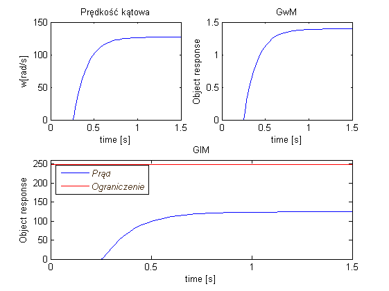
Obliczanie nastaw ciągłego regulatora prędkości
%Regulator typu P Kwp = Kri %Kw = Mn/psi*kz*Kt*deltawn; %Regulator typu PI Kw = J/(2*Kt*kz*Beta*psi);
Obliczanie nastaw ciągłego regulatora prądu
m = T1; V = (Beta*(Y*Kp*B))/((B1-Beta)*Rt);
Rozpoczęcie symulacji układów z regulatorem ciągłym dla róznych rodzajów obciążenia
ROZRUCH UKŁADU BEZ MOMENTU OBCIAŻENIA *REGULACJA CIĄGŁA***
sim Model_simulink_no_Torque.slx; f = figure; set(f,'name','No Torque','numbertitle','off'); subplot(2,2,1); plot(no_Torque.time,no_Torque.signals.values(:,1)); title('Napięcie silnika'); xlabel('time [s]'); ylabel('U[V]'); subplot(2,2,2); plot(no_Torque.time,no_Torque.signals.values(:,2)); title('Napięcie sterownika prądu'); xlabel('time [s]'); ylabel('U[V]'); subplot(2,2,3); plot(no_Torque.time,no_Torque.signals.values(:,3)); title('prędkość obrotowa'); xlabel('time [s]'); ylabel('n[obr/min]'); subplot(2,2,4); plot(no_Torque.time,no_Torque.signals.values(:,4)); title('Prąd silnika'); xlabel('time [s]'); ylabel('I[A]'); hold on; %naniesienie ograniczenia subplot(2,2,4); plot(no_Torque.time,no_Torque.signals.values(:,6),'-r'); hleg = legend('Wartość prądu','Ograniczenie','Location','NorthEast'); set(hleg,'FontAngle','italic','TextColor',[.3,.2,.1]); hold off; % drukuję powiększenie w celu zweryfikowania stałej czasowej układu (beta) f = figure; set(f,'name','Bez obciążenia - powiększenie','numbertitle','off'); plot(no_Torque.time,no_Torque.signals.values(:,4)); hold on; plot(no_Torque.time,2*In*0.632*ones(length(no_Torque.time),1),'--r'); plot(0.04*ones(100,1),linspace(0,250,100),'--r'); title('Prąd silnika - weryfikacja stałej czasowej(Beta)'); xlabel('time[s]'); ylabel('I[A]'); grid on; xlim([0 0.1]);
Warning: Output port 1 of 'Model_simulink_no_Torque/Gain2' is not connected. Warning: Input port 1 of 'Model_simulink_no_Torque/Sign' is not connected.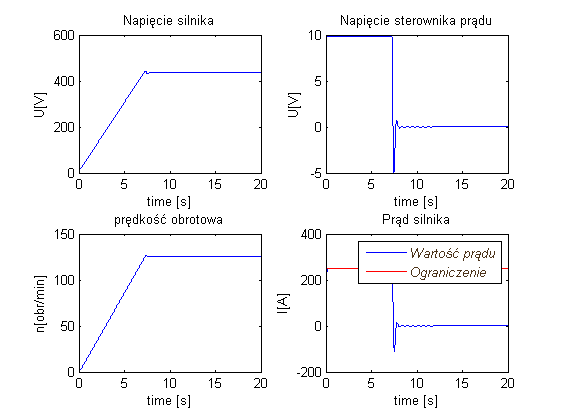 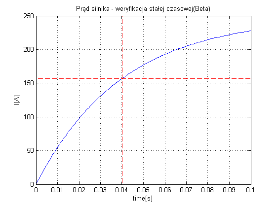
ROZRUCH ZE ZNAMIONOWYM MOMENTEM CZYNNYM *REGULACJA CIĄGŁA***
sim Model_simulink_static_Torque.slx; f = figure; set(f,'name','static_Torque','numbertitle','off'); subplot(2,2,1); plot(static_Torque.time,static_Torque.signals.values(:,1)); title('Napięcie silnika'); xlabel('time [s]'); ylabel('U[V]'); subplot(2,2,2); plot(static_Torque.time,static_Torque.signals.values(:,2)); title('Napięcie sterownika prądu'); xlabel('time [s]'); ylabel('U[V]'); subplot(2,2,3); plot(static_Torque.time,static_Torque.signals.values(:,3)); title('prędkość obrotowa'); xlabel('time [s]'); ylabel('n[obr/min]'); subplot(2,2,4); plot(static_Torque.time,static_Torque.signals.values(:,4)); title('Prąd silnika'); xlabel('time [s]'); ylabel('I[A]'); hold on; %naniesienie ograniczenia subplot(2,2,4); plot(static_Torque.time,static_Torque.signals.values(:,6),'-r'); hleg = legend('Wartość prądu','Ograniczenie','Location','NorthEast'); set(hleg,'FontAngle','italic','TextColor',[.3,.2,.1]); hold off; % obserwujemy nawrót silnika f = figure; set(f,'name','Obserwujemy nawrót silnika - moment czynny','numbertitle','off'); plot(static_Torque.time,static_Torque.signals.values(:,3)); title('Prędkość obrotowa - nawrót silnika dla obciążenia znamionowym momentem czynnym'); xlabel('time[s]'); ylabel('n[obr/min]'); grid on; axis([0 0.1 -0.1 0.3]);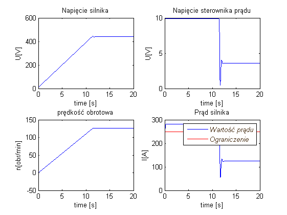 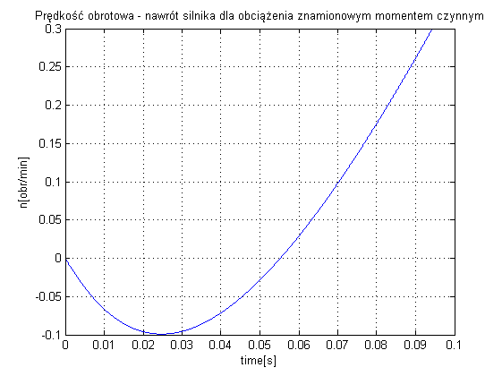
PRACA UKŁADU Z UDAROWYM MOMENTEM OBCIĄŻENIA *REGULACJA CIĄGŁA***
sim Model_simulink_impact_Torque.slx; f = figure; set(f,'name','impact_Torque','numbertitle','off'); title('TYYYTUŁ'); subplot(2,2,1); plot(impact_Torque.time,impact_Torque.signals.values(:,1)); title('Napięcie silnika'); xlabel('time [s]'); ylabel('U[V]'); subplot(2,2,2); plot(impact_Torque.time,impact_Torque.signals.values(:,2)); title('Napięcie sterownika prądu'); xlabel('time [s]'); ylabel('U[V]'); subplot(2,2,3); plot(impact_Torque.time,impact_Torque.signals.values(:,3)); title('prędkość obrotowa'); xlabel('time [s]'); ylabel('n[obr/min]'); subplot(2,2,4); plot(impact_Torque.time,impact_Torque.signals.values(:,4)); title('Prąd silnika'); xlabel('time [s]'); ylabel('I[A]'); hold on; %naniesienie ograniczenia subplot(2,2,4); plot(impact_Torque.time,impact_Torque.signals.values(:,6),'-r'); hleg = legend('Wartość prądu','Ograniczenie','Location','NorthEast'); set(hleg,'FontAngle','italic','TextColor',[.3,.2,.1]); hold off;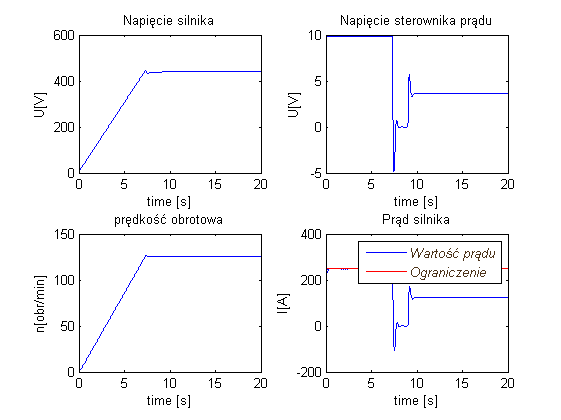
PRACA UKŁADU Z BIERNYM MOMENTEM OBCIĄŻENIA *REGULACJA CIĄGŁA***
sim Model_simulink_passive_Torque.slx; f = figure; set(f,'name','passive_Torque','numbertitle','off'); title('TYYYTUŁ'); subplot(2,2,1); plot(passive_Torque.time,passive_Torque.signals.values(:,1)); title('Napięcie silnika'); xlabel('time [s]'); ylabel('U[V]'); subplot(2,2,2); plot(passive_Torque.time,passive_Torque.signals.values(:,2)); title('Napięcie sterownika prądu'); xlabel('time [s]'); ylabel('U[V]'); subplot(2,2,3); plot(passive_Torque.time,passive_Torque.signals.values(:,3)); title('prędkość obrotowa'); xlabel('time [s]'); ylabel('n[obr/min]'); subplot(2,2,4); plot(passive_Torque.time,passive_Torque.signals.values(:,4)); title('Prąd silnika'); xlabel('time [s]'); ylabel('I[A]'); hold on; %naniesienie ograniczenia subplot(2,2,4); plot(passive_Torque.time,passive_Torque.signals.values(:,6),'-r'); hleg = legend('Wartość prądu','Ograniczenie','Location','NorthEast'); set(hleg,'FontAngle','italic','TextColor',[.3,.2,.1]); hold off; % obserwujemy nawrót silnika f = figure; set(f,'name','Obserwujemy nawrót silnika - moment bierny','numbertitle','off'); plot(passive_Torque.time,passive_Torque.signals.values(:,3)); title('Prędkość obrotowa - brak nawrotu silnika dla znamionowego momentu biernego'); xlabel('time[s]'); ylabel('n[obr/min]'); grid on; axis([0 0.1 -0.1 0.3]);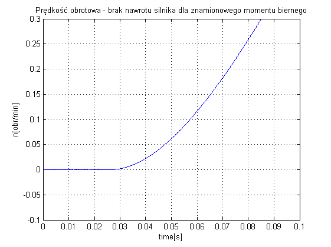
PRACA UKŁADU Z PULSACYJNYM MOMENTEM OBCIĄŻENIA *REGULACJA CIĄGŁA***
sim Model_simulink_pulse_Torque.slx; f = figure; set(f,'name','pulse_Torque','numbertitle','off'); title('TYYYTUŁ'); subplot(2,2,1); plot(pulse_Torque.time,pulse_Torque.signals.values(:,1)); title('Napięcie silnika'); xlabel('time [s]'); ylabel('U[V]'); subplot(2,2,2); plot(pulse_Torque.time,pulse_Torque.signals.values(:,2)); title('Napięcie sterownika prądu'); xlabel('time [s]'); ylabel('U[V]'); subplot(2,2,3); plot(pulse_Torque.time,pulse_Torque.signals.values(:,3)); title('prędkość obrotowa'); xlabel('time [s]'); ylabel('n[obr/min]'); subplot(2,2,4); plot(pulse_Torque.time,pulse_Torque.signals.values(:,4)); title('Prąd silnika'); xlabel('time [s]'); ylabel('I[A]'); hold on; %naniesienie ograniczenia subplot(2,2,4); plot(pulse_Torque.time,pulse_Torque.signals.values(:,6),'-r'); hleg = legend('Wartość prądu','Ograniczenie','Location','NorthEast'); set(hleg,'FontAngle','italic','TextColor',[.3,.2,.1]); hold off;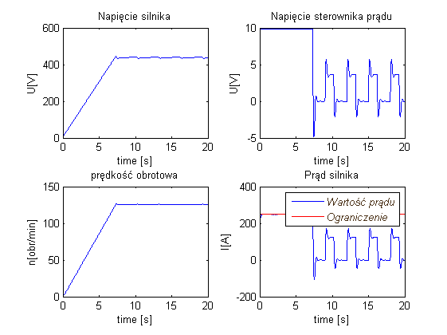
Punkt 3 oblcizanie transmitancji zastępczej układu ciągłego
% reg_momentu*przekształtnik*silnik*bezwładność RegPredkosc = tf([Kw*TR Kw],[TR,0]); % transmitacja regulatora prędkości RegMoment = tf([m 1],[V 0]); % transmitancja regulatora momentu(prądu) PrzeksztTyryst = tf([Kp],[tau0 1]); % transmitancja przekształtnika tyrystorowego Silnik = tf([B 0],[Rt*B1*T1 Rt*(B1+T1) Rt]);% transmitancja silnik Bezwlad = tf([1],[J 0]); % transmitancja momentu bezwladnosci sys = series(RegMoment,PrzeksztTyryst); % liczymy szeregowo transmitancje regulatora predkosci i przekształtnika tyrystorowego sys = series(sys,Silnik); % liczymy szeregowo transmitancję poprzedniego układu i silnika sys = feedback(sys, Y); % liczymy sprzężenie zwrotne uzyskanej transmitancji oraz Y sys = series(RegPredkosc,sys); % liczymy szeregowo transmitancję poprzedniego układu i regulatora prędkości disp('Transmitancja otwartego układu regulacji = '); sys = series(sys,Bezwlad) % liczymy szeregowo transmitancję poprzedniego układu i momentu bezwladnosci
Transmitancja otwartego układu regulacji =
sys =
2.334 s^3 + 196.7 s^2 + 1138 s
----------------------------------------------------
5.661e-07 s^6 + 0.001763 s^5 + 0.177 s^4 + 3.346 s^3
Continuous-time transfer function.
Charakterystyki bodego otwartego układu
f = figure; set(f,'name','Bode plot dla układu otwartego','numbertitle','off'); bode(sys);grid on; % charakterystyki Bodego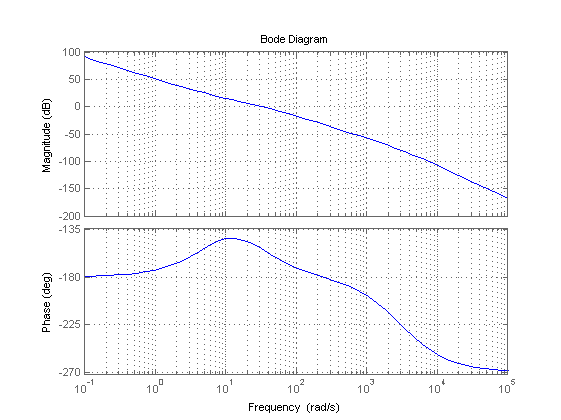
Charakterystyka nyquista otwartego układu
f = figure; set(f,'name','Nyquist plot dla układu otwartego','numbertitle','off'); subplot(2,1,1); nyquist(sys);grid on; % charakterystyki nyquista subplot(2,1,2); nyquist(sys); axis([-0.025 0 -1e-3 1e-3]);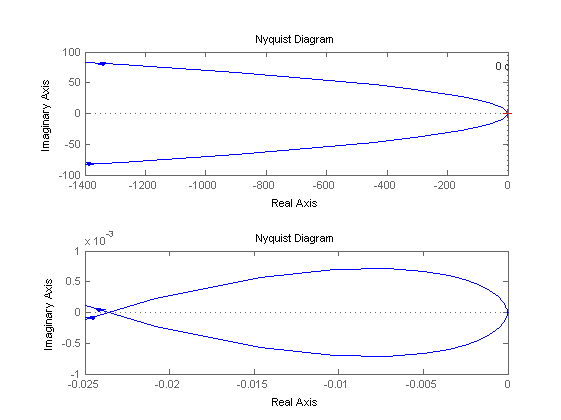
liczymy transmitancję zamkniętego układu w celu wyznaczenia wg
disp('Transmitancja zamkniętego układu regulacji = ');
sys = feedback(sys, Kt)
Transmitancja zamkniętego układu regulacji =
sys =
2.334 s^3 + 196.7 s^2 + 1138 s
------------------------------------------------------------------------
5.661e-07 s^6 + 0.001763 s^5 + 0.177 s^4 + 3.501 s^3 + 13.05 s^2
+ 75.5 s
Continuous-time transfer function.
Charakterystyka Bodego układu zamkniętego
f = figure; set(f,'name','Bode plot dla układu zamkniętego','numbertitle','off'); bode(sys);grid on; % charakterystyki Bodego [Gm,Pm,Wgm,Wpm] = margin(sys);
Warning: The closed-loop system is unstable.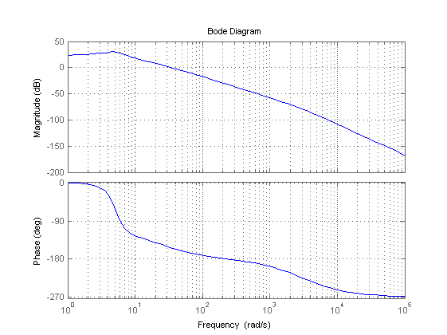
Charakterystyka nyquista układu zamkniętego oraz obliczanie zapasu fazy i wzmocnienia
f = figure; set(f,'name','Nyquist plot dla układu zamkniętego','numbertitle','off'); subplot(2,1,1); nyquist(sys);grid on; title(sprintf('Zapas wzmocnienia %f[razy]\nZapas fazy %f[s]',Gm,Pm*pi/180/Wpm)); subplot(2,1,2); nyquist(sys); axis([-0.025 0 -1e-3 1e-3]); wg = 41.8; %[rad/s] odczytane z wykresu wgp = wg*100; fgp = 2*pi*wgp; Tp = 1/fgp; N=20; Tp = Beta/N; %Ti = TR; % czas zdwojenie do dyskretyzacji (4*Beta)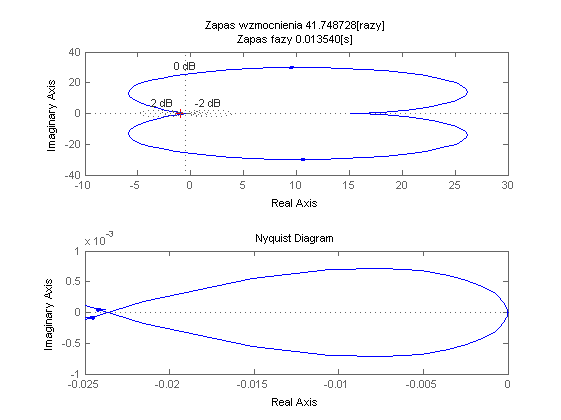
Liczymy nastawy dyskretnego regulatora obrotów
K1 = Kw; K2 = Kw*(Tp/TR-1);
Liczymy nastawy dyskretnego regulatora prądu
K3 = m/V; K4 = (Tp-m)/V;
Wykonujemy symulację dla źle dobranego(zbyt małego) czasu próbkowania Tp i obserwujemy zniekształcenie przebiegów
Tp = 0.01; Q = N*2/2e15; % ROZRUCH UKŁADU BEZ MOMENTU OBCIĄŻENIA ***REGULACHA DYSKRETNA*** sim Model_simulink_dyskretny_no_torque.slx; f = figure; set(f,'name','Discrete No Torque','numbertitle','off'); subplot(2,2,1); plot(discrete_no_Torque.time,discrete_no_Torque.signals.values(:,1)); title('Napięcie silnika'); xlabel('time [s]'); ylabel('U[V]'); subplot(2,2,2); plot(discrete_no_Torque.time,discrete_no_Torque.signals.values(:,2)); title('Napięcie sterownika prądu'); xlabel('time [s]'); ylabel('U[V]'); subplot(2,2,3); plot(discrete_no_Torque.time,discrete_no_Torque.signals.values(:,3)); title('prędkość obrotowa'); xlabel('time [s]'); ylabel('n[obr/min]'); subplot(2,2,4); plot(discrete_no_Torque.time,discrete_no_Torque.signals.values(:,4)); title('Prąd silnika'); xlabel('time [s]'); ylabel('I[A]'); hold on; %naniesienie ograniczenia subplot(2,2,4); plot(discrete_no_Torque.time,discrete_no_Torque.signals.values(:,6),'-r'); hleg = legend('Wartość prądu','Ograniczenie','Location','NorthEast'); set(hleg,'FontAngle','italic','TextColor',[.3,.2,.1]); hold off;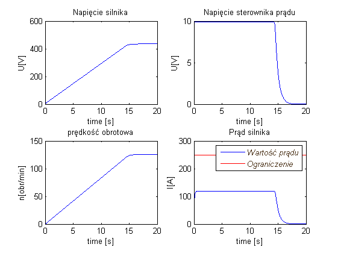
Liczymy błąd kwantyzacji dla dobrze dobranego Tp
Wykonujemy symulację dla zbyt dużego kwantyzatora i obserwujemy rezultaty
Tp = Beta/N; Q = 0.05; % ROZRUCH UKŁADU BEZ MOMENTU OBCIĄŻENIA ***REGULACHA DYSKRETNA*** sim Model_simulink_dyskretny_no_torque.slx; f = figure; set(f,'name','Discrete No Torque','numbertitle','off'); subplot(2,2,1); plot(discrete_no_Torque.time,discrete_no_Torque.signals.values(:,1)); title('Napięcie silnika'); xlabel('time [s]'); ylabel('U[V]'); subplot(2,2,2); plot(discrete_no_Torque.time,discrete_no_Torque.signals.values(:,2)); title('Napięcie sterownika prądu'); xlabel('time [s]'); ylabel('U[V]'); subplot(2,2,3); plot(discrete_no_Torque.time,discrete_no_Torque.signals.values(:,3)); title('prędkość obrotowa'); xlabel('time [s]'); ylabel('n[obr/min]'); subplot(2,2,4); plot(discrete_no_Torque.time,discrete_no_Torque.signals.values(:,4)); title('Prąd silnika'); xlabel('time [s]'); ylabel('I[A]'); hold on; %naniesienie ograniczenia subplot(2,2,4); plot(discrete_no_Torque.time,discrete_no_Torque.signals.values(:,6),'-r'); hleg = legend('Wartość prądu','Ograniczenie','Location','NorthEast'); set(hleg,'FontAngle','italic','TextColor',[.3,.2,.1]); hold off;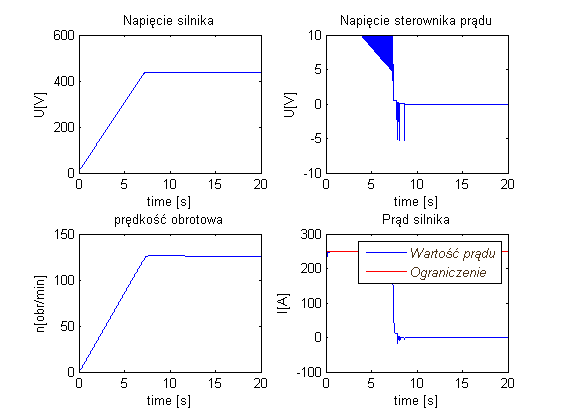
Następnie wykonujemy symulację dla małego kwantyzatora i obserwujemy brak zakłóceń
Q = N*2/2e15; % ROZRUCH UKŁADU BEZ MOMENTU OBCIĄŻENIA ***REGULACHA DYSKRETNA*** sim Model_simulink_dyskretny_no_torque.slx; f = figure; set(f,'name','Discrete No Torque','numbertitle','off'); subplot(2,2,1); plot(discrete_no_Torque.time,discrete_no_Torque.signals.values(:,1)); title('Napięcie silnika'); xlabel('time [s]'); ylabel('U[V]'); subplot(2,2,2); plot(discrete_no_Torque.time,discrete_no_Torque.signals.values(:,2)); title('Napięcie sterownika prądu'); xlabel('time [s]'); ylabel('U[V]'); subplot(2,2,3); plot(discrete_no_Torque.time,discrete_no_Torque.signals.values(:,3)); title('prędkość obrotowa'); xlabel('time [s]'); ylabel('n[obr/min]'); subplot(2,2,4); plot(discrete_no_Torque.time,discrete_no_Torque.signals.values(:,4)); title('Prąd silnika'); xlabel('time [s]'); ylabel('I[A]'); hold on; %naniesienie ograniczenia subplot(2,2,4); plot(discrete_no_Torque.time,discrete_no_Torque.signals.values(:,6),'-r'); hleg = legend('Wartość prądu','Ograniczenie','Location','NorthEast'); set(hleg,'FontAngle','italic','TextColor',[.3,.2,.1]); hold off;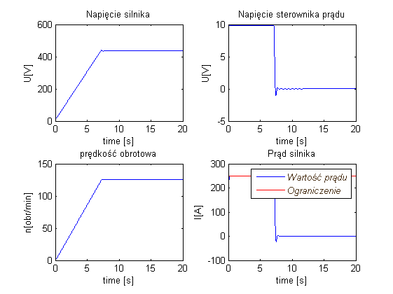
Rozpoczęcie symulacji układów z regulatorem dyskretnym dla różnych rodzajów obciażenia
ROZRUCH UKŁADU BEZ MOMENTU OBCIĄŻENIA *REGULACHA DYSKRETNA***
sim Model_simulink_dyskretny_no_torque.slx; f = figure; set(f,'name','Discrete No Torque','numbertitle','off'); subplot(2,2,1); plot(discrete_no_Torque.time,discrete_no_Torque.signals.values(:,1)); title('Napięcie silnika'); xlabel('time [s]'); ylabel('U[V]'); subplot(2,2,2); plot(discrete_no_Torque.time,discrete_no_Torque.signals.values(:,2)); title('Napięcie sterownika prądu'); xlabel('time [s]'); ylabel('U[V]'); subplot(2,2,3); plot(discrete_no_Torque.time,discrete_no_Torque.signals.values(:,3)); title('prędkość obrotowa'); xlabel('time [s]'); ylabel('n[obr/min]'); subplot(2,2,4); plot(discrete_no_Torque.time,discrete_no_Torque.signals.values(:,4)); title('Prąd silnika'); xlabel('time [s]'); ylabel('I[A]'); hold on; %naniesienie ograniczenia subplot(2,2,4); plot(discrete_no_Torque.time,discrete_no_Torque.signals.values(:,6),'-r'); hleg = legend('Wartość prądu','Ograniczenie','Location','NorthEast'); set(hleg,'FontAngle','italic','TextColor',[.3,.2,.1]); hold off;
DZIAŁANIE UKŁADU Z UDAROWYM MOMENTEM OBCIĄŻENIA *REGULACHA DYSKRETNA***
sim Model_simulink_dyskretny_impact_torque.slx; f = figure; set(f,'name','Discrete Impact Torque','numbertitle','off'); subplot(2,2,1); plot(discrete_impact_Torque.time,discrete_impact_Torque.signals.values(:,1)); title('Napięcie silnika'); xlabel('time [s]'); ylabel('U[V]'); subplot(2,2,2); plot(discrete_impact_Torque.time,discrete_impact_Torque.signals.values(:,2)); title('Napięcie sterownika prądu'); xlabel('time [s]'); ylabel('U[V]'); subplot(2,2,3); plot(discrete_impact_Torque.time,discrete_impact_Torque.signals.values(:,3)); title('prędkość obrotowa'); xlabel('time [s]'); ylabel('n[obr/min]'); subplot(2,2,4); plot(discrete_impact_Torque.time,discrete_impact_Torque.signals.values(:,4)); title('Prąd silnika'); xlabel('time [s]'); ylabel('I[A]'); hold on; %title('\frac{1}{2}','Interpreter','latex') %naniesienie ograniczenia subplot(2,2,4); plot(discrete_impact_Torque.time,discrete_impact_Torque.signals.values(:,6),'-r'); hleg = legend('Wartość prądu','Ograniczenie','Location','NorthEast'); set(hleg,'FontAngle','italic','TextColor',[.3,.2,.1]); hold off;
Warning: Source 'Model_simulink_dyskretny_impact_torque/w_ref Kt1' specifies that its sample time (-1) is back-inherited. You should explicitly specify the sample time of sources. You can disable this diagnostic by setting the 'Source block specifies -1 sample time' diagnostic to 'none' in the Sample Time group on the Diagnostics pane of the Configuration Parameters dialog box.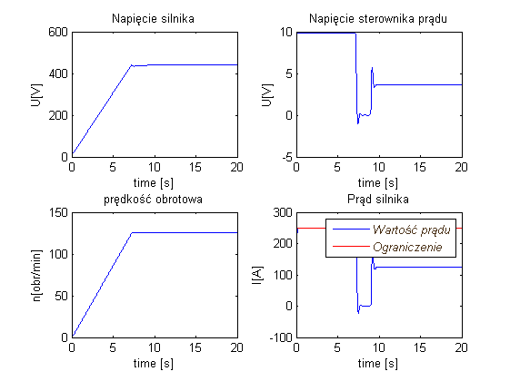
ROZRUCH UKŁADU BEZ MOMENTU OBCIĄŻENIA *REGULACHA DYSKRETNA***
sim Model_simulink_dyskretny_no_torque.slx; f = figure; set(f,'name','Discrete No Torque','numbertitle','off'); subplot(2,2,1); plot(discrete_no_Torque.time,discrete_no_Torque.signals.values(:,1)); title('Napięcie silnika'); xlabel('time [s]'); ylabel('U[V]'); subplot(2,2,2); plot(discrete_no_Torque.time,discrete_no_Torque.signals.values(:,2)); title('Napięcie sterownika prądu'); xlabel('time [s]'); ylabel('U[V]'); subplot(2,2,3); plot(discrete_no_Torque.time,discrete_no_Torque.signals.values(:,3)); title('prędkość obrotowa'); xlabel('time [s]'); ylabel('n[obr/min]'); subplot(2,2,4); plot(discrete_no_Torque.time,discrete_no_Torque.signals.values(:,4)); title('Prąd silnika'); xlabel('time [s]'); ylabel('I[A]'); hold on; %naniesienie ograniczenia subplot(2,2,4); plot(discrete_no_Torque.time,discrete_no_Torque.signals.values(:,6),'-r'); hleg = legend('Wartość prądu','Ograniczenie','Location','NorthEast'); set(hleg,'FontAngle','italic','TextColor',[.3,.2,.1]); hold off;
DZIAŁANIE UKŁADU Z PULSACYJNYM MOMENTEM OBCIĄŻENIA *REGULACHA DYSKRETNA***
sim Model_simulink_dyskretny_pulse_torque.slx; f = figure; set(f,'name','Discrete Pulse Torque','numbertitle','off'); subplot(2,2,1); plot(discrete_pulse_Torque.time,discrete_pulse_Torque.signals.values(:,1)); title('Napięcie silnika'); xlabel('time [s]'); ylabel('U[V]'); subplot(2,2,2); plot(discrete_pulse_Torque.time,discrete_pulse_Torque.signals.values(:,2)); title('Napięcie sterownika prądu'); xlabel('time [s]'); ylabel('U[V]'); subplot(2,2,3); plot(discrete_pulse_Torque.time,discrete_pulse_Torque.signals.values(:,3)); title('prędkość obrotowa'); xlabel('time [s]'); ylabel('n[obr/min]'); subplot(2,2,4); plot(discrete_pulse_Torque.time,discrete_pulse_Torque.signals.values(:,4)); title('Prąd silnika'); xlabel('time [s]'); ylabel('I[A]'); hold on; %title('\frac{1}{2}','Interpreter','latex') %naniesienie ograniczenia subplot(2,2,4); plot(discrete_pulse_Torque.time,discrete_pulse_Torque.signals.values(:,6),'-r'); hleg = legend('Wartość prądu','Ograniczenie','Location','NorthEast'); set(hleg,'FontAngle','italic','TextColor',[.3,.2,.1]); hold off;
Warning: Source 'Model_simulink_dyskretny_pulse_torque/w_ref Kt1' specifies that its sample time (-1) is back-inherited. You should explicitly specify the sample time of sources. You can disable this diagnostic by setting the 'Source block specifies -1 sample time' diagnostic to 'none' in the Sample Time group on the Diagnostics pane of the Configuration Parameters dialog box.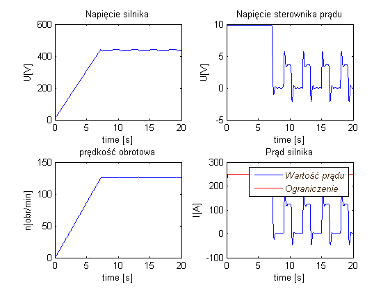
ROZRUCH UKŁADU ZE ZNAMIONOWYM MOMENTEM OBCIĄŻENIA *REGULACHA DYSKRETNA***
deltaIn=(psi*V*Mn)/(psi^2*V+J*Kp*Y); Uz0 = (Lambda*In+deltaIn)*(Y*B1)/(B1-Beta); sim Model_simulink_dyskretny_static_torque.slx; f = figure; set(f,'name','Discrete Static Torque','numbertitle','off'); subplot(2,2,1); plot(discrete_static_Torque.time,discrete_static_Torque.signals.values(:,1)); title('Napięcie silnika'); xlabel('time [s]'); ylabel('U[V]'); subplot(2,2,2); plot(discrete_static_Torque.time,discrete_static_Torque.signals.values(:,2)); title('Napięcie sterownika prądu'); xlabel('time [s]'); ylabel('U[V]'); subplot(2,2,3); plot(discrete_static_Torque.time,discrete_static_Torque.signals.values(:,3)); title('prędkość obrotowa'); xlabel('time [s]'); ylabel('n[obr/min]'); subplot(2,2,4); plot(discrete_static_Torque.time,discrete_static_Torque.signals.values(:,4)); title('Prąd silnika'); xlabel('time [s]'); ylabel('I[A]'); hold on; %naniesienie ograniczenia subplot(2,2,4); plot(discrete_static_Torque.time,discrete_static_Torque.signals.values(:,6),'-r'); hleg = legend('Wartość prądu','Ograniczenie','Location','NorthEast'); set(hleg,'FontAngle','italic','TextColor',[.3,.2,.1]); hold off;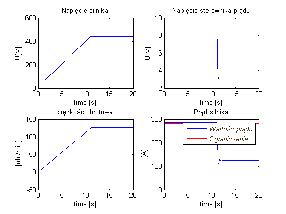